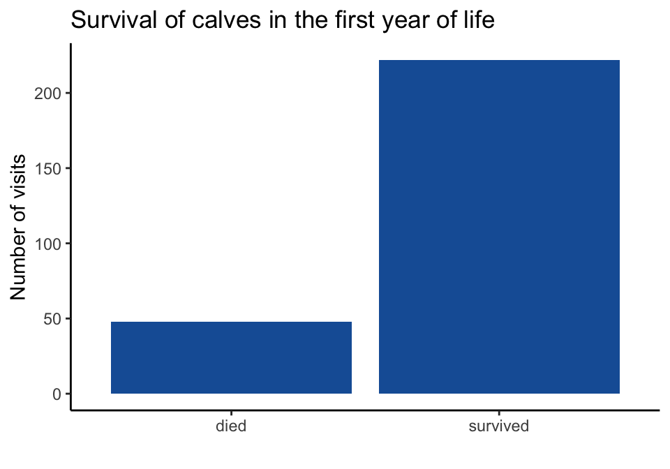
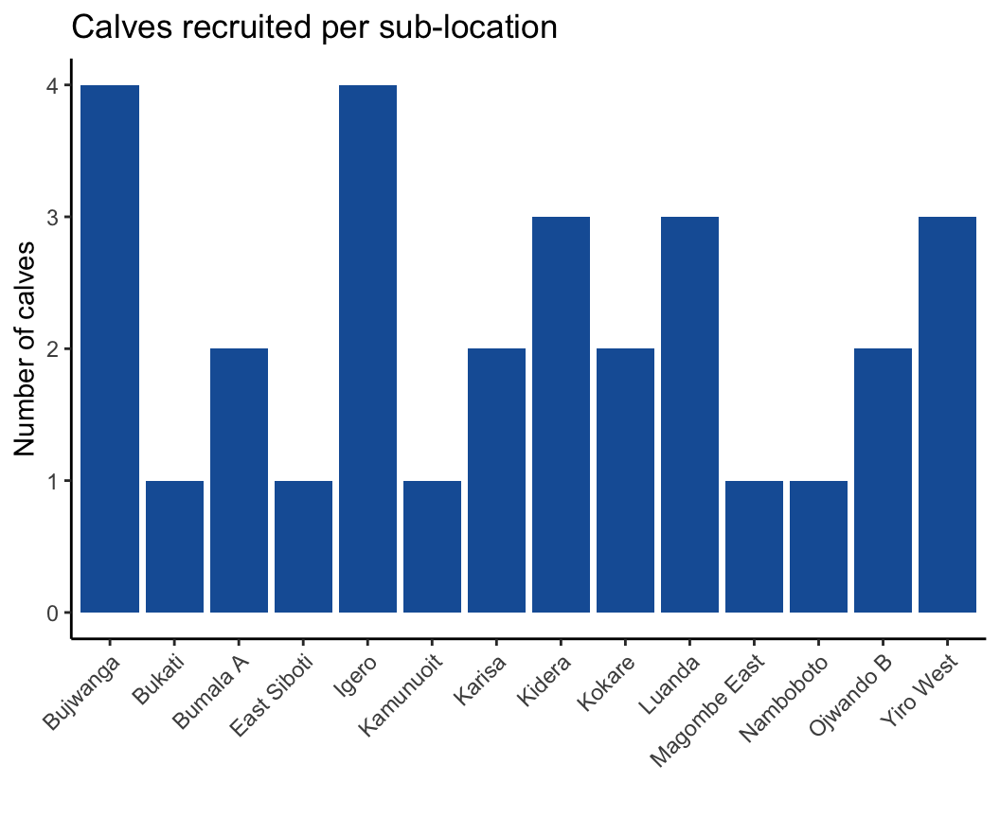
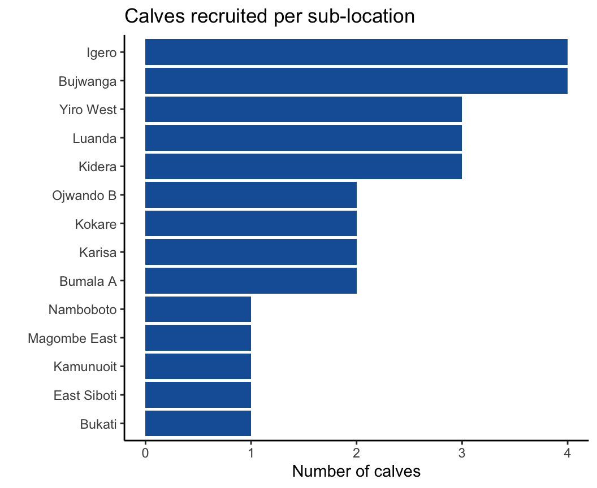
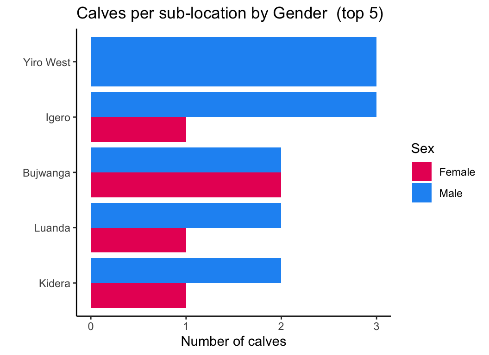
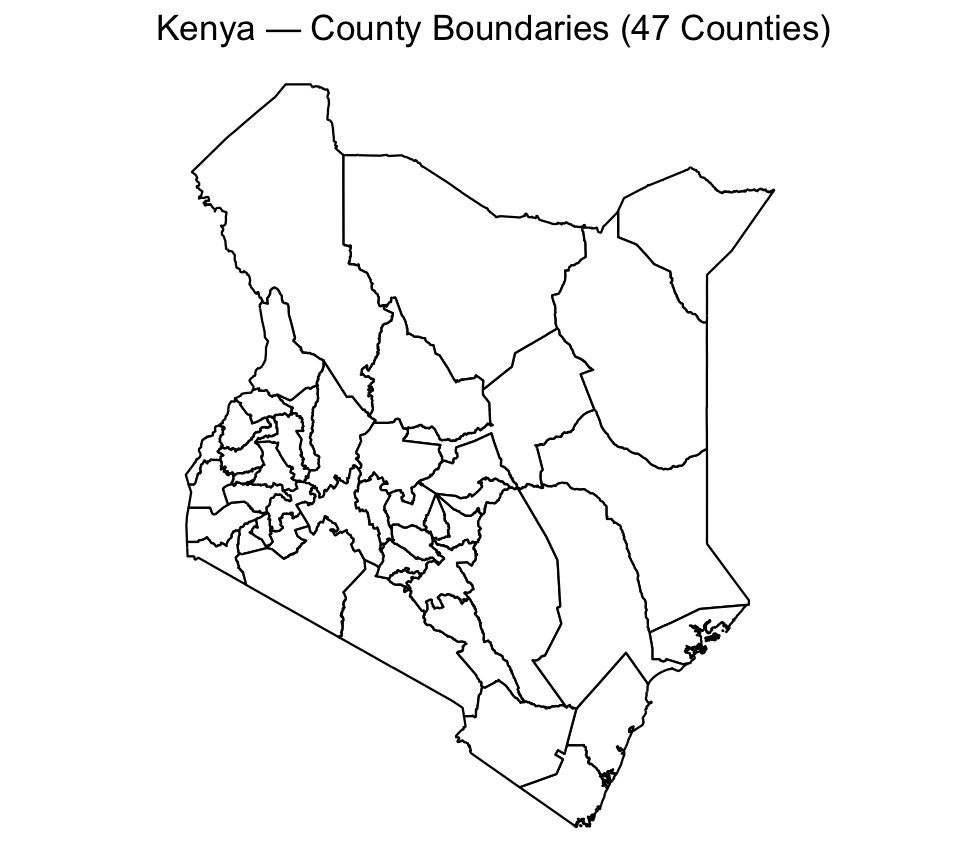
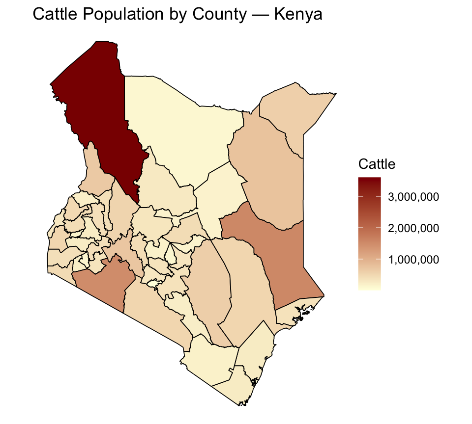

library(tidyverse)
library(readxl)Getting data in & oriented
read_csv(), read_excel() glimpse(), summary() |> filter(), arrange() Shaping & summarising
select(), rename() mutate(), case_when() group_by() + summarise() Visualising
ggplot2 — grammar of graphics Before you can analyse data, you must load it into R. Two tidyverse packages handle virtually every file format you will encounter in practice.
readr reads rectangular text files.readxl reads Excel workbooks.| Package | Function | Use when… |
|---|---|---|
readr |
read_csv() |
Your file is .csv — the universal format |
readr |
read_tsv() |
Columns are separated by tabs |
readxl |
read_excel() |
Your file is .xlsx or .xls |
readxlis not part of the tidyverse core. Always calllibrary(readxl)explicitly.
read_csv() is the workhorse for flat files. It reads faster than base R’s read.csv(), it never silently converts strings to factors, and prints a column-type summary on load so you always know what was parsed.Excel workbooks carry hidden complexity including multiple sheets, merged header rows, dates stored as serial numbers.
read_excel() exposes each of these as an explicit argument, making your assumptions visible and reproducible.# this reads the first sheet by default
ideal <- read_excel("ideal.xlsx")
# precise reading, when sheets have merged titles or extra header rows
ideal <- read_excel(
"ideal.xlsx", # excel file
sheet = "Calf Data", # specified sheet name
skip = 2, # skip merged title rows before the header
col_names = TRUE # use the first row as column names
)The IDEAL study followed 534 calves across 14 sub-locations in Western Kenya, recording health indicators at roughly six-week intervals from birth to one year.
Three lines take you from nothing to a live dataset. In practice, you run these once at the top of every script.
Once a package is installed, you never need
install.packages()again — onlylibrary().
Never analyse data you have not looked at. These three functions are your first line of due diligence — run them immediately after every read_*() call.
head() shows the first 5 rows.dim() confirms the number of rows and columns.names() lists every columnglimpse() — The Structural Viewglimpse() transposes your data: each column becomes a row, showing its type and first few values side by side.Notice:
CalfSexis an integer, not a label. Columns likeTheileria.spp.contain dots in their names.ReasonsLoss1records the outcome. These are exactly the things we will fix withrename()andmutate().
summary() — The Statistical Viewsummary() applies summary statistics to every numeric column. Missing values appear as a named count.filter()The pipe is the single most transformative idea in tidyverse programming. It turns nested, inside-out function calls into a left-to-right sentence.
|>Read
|>as “and then” — take the data, and then filter, and then select. Keyboard shortcut: Ctrl + Shift + M in RStudio.
%>% vs |> — Which Pipe?%>% (magrittr) |
\|> (base R) |
|
|---|---|---|
| Requires a package? | Yes — loaded with tidyverse | No — built into R ≥ 4.1 |
| Speed | Slightly slower | Marginally faster |
| Where you’ll see it | Most existing tidyverse tutorials | Modern R code, including this session |
filter() — Keeping the Rows You Needfilter() evaluates a condition row by row and returns only the rows where the condition is TRUE. Every other row is silently discarded leaving the column structure is unchanged.
filter() — Combining Conditions& for AND logic, or | for OR logic.Column names containing
.require backticks:`Theileria.spp.`. This friction is precisely whyrename()matters — which we cover shortly.
filter() — Handling Missing ValuesMissing values are R’s most common source of silent, hard-to-detect errors. The rule is simple: NA == NA returns NA, not TRUE. That means filter(Weight == NA) always returns zero rows — even when missing values exist.
is.na()is the only reliable way to test for missing values in R.
filter() — Reference: Logical Operators| Operator | Meaning | Example |
|---|---|---|
== |
Equal to | ReasonsLoss1 == "survived" |
!= |
Not equal to | sublocation != "Igero" |
> / < |
Greater / less than | Weight > 30 |
>= / <= |
Greater / less or equal | ManualPCV >= 24 |
& |
AND — both conditions true | `Theileria.spp.` == 1 & ReasonsLoss1 == "died" |
\| |
OR — either condition true | sublocation == "Kidera" \| sublocation == "Igero" |
%in% |
Belongs to a set | sublocation %in% c("Kidera", "Igero", "Bukati") |
is.na() |
Is missing | filter(is.na(Weight)) |
between() |
Falls within a range | between(Age, 100, 200) |
filter() — The %in% Operator%in% tests membership in a set — far more readable than chaining multiple == conditions with |.select() & rename()select() shapes the column space;rename() removes the friction of working with raw source names.select() — Choosing Your ColumnsPass column names directly. select() returns a tibble with exactly those columns in the order you listed them. Rows are untouched.
Columns with
.in their names still require backticks insideselect(). One of many reasons torename()early.
select() — Dropping ColumnsPrefix any name with - to drop it instead of keeping it. When you want most columns but not a few, dropping is more concise than listing every keeper.
select() — Helper FunctionsWhen a dataset has dozens of columns, selecting by pattern is more robust than listing names.
| Helper | Selects columns whose names… |
|---|---|
starts_with("x") |
Begin with “x” |
ends_with("x") |
End with “x” |
contains("x") |
Contain “x” anywhere |
where(is.numeric) |
Pass a type test |
everything() |
Are not already selected |
rename()Theileria.spp., uppercase everywhere, cryptic codes like ReasonsLoss1. rename() removes that friction permanently. Do it once, and every line that follows is cleaner.arrange() — Sorting Rowsarrange() reorders rows by one or more columns. Unlike filter(), it never removes rows it only changes their order.mutate()mutate() derives new columns from existing ones without altering a single original value. Think of it as adding new knowledge to your data, not replacing old knowledge.mutate() — Creating a New Columnmutate() appends the new column to the right of the tibble. Every existing column is preserved exactly as it was.mutate() — Multiple Columns at Oncemutate() call creates as many columns as you need. Later expressions in the same call can reference columns created earlier, so the order of your derivations matters and can build on itself.mutate() with case_when()case_when() is R’s vectorised multi-condition classifier — the equivalent of Excel’s nested IFS.TRUE match determines the value assigned to that row.case_when() — The Mental ModelEach line is one rule: **“When** this condition is true → assign this value.”
Rules are tested in order. The moment a condition matches, R stops testing — so place the most specific conditions first, the broadest last.
group_by() & summarise()Most research questions are comparisons: does this outcome differ across groups? group_by() and summarise() are how tidyverse answers them
summarise() — The BaselineWithout a grouping, summarise() collapses the entire dataset to a single summary row. This is your reference point.
na.rm = TRUEtells R to ignore missing values when computing the mean. Without it, any column containing a singleNAreturnsNAas the summary.
group_by() + summarise()group_by() and every summary is computed independently for each group. The result is one row per unique combination of grouping variables.ungroup() afterwards to release the grouping structure.| Function | Computes |
|---|---|
n() |
Number of rows in the group |
n_distinct(x) |
Number of unique values |
sum(x, na.rm = TRUE) |
Total — events, counts, doses |
mean(x, na.rm = TRUE) |
Average |
median(x, na.rm = TRUE) |
Median — robust to outliers |
sd(x, na.rm = TRUE) |
Standard deviation |
min(x) / max(x) |
Minimum and maximum |
sum(is.na(x)) |
Count of missing values |
mean(condition) |
Proportion satisfying a condition |
Every numeric summary on real data should carry
na.rm = TRUE. Missing values will otherwise silently propagate asNAin your output.
Real datasets live across multiple tables. Joins are how you reunite them — matching rows from two sources on a shared key, without manually copying values between files.
The IDEAL dataset records one row per calf visit. A separate table holds sub-location metadata — division, altitude, administrative boundaries. Joining enriches every visit row without duplicating the metadata by hand.
ideal — Visit records
# A tibble: 14 × 1
sublocation
<chr>
1 Bujwanga
2 Bukati
3 Bumala A
4 East Siboti
5 Igero
6 Kamunuoit
7 Karisa
8 Kidera
9 Kokare
10 Luanda
11 Magombe East
12 Namboboto
13 Ojwando B
14 Yiro West sublocation_info — Area metadata
# A tibble: 13 × 3
sublocation division altitude_m
<chr> <chr> <dbl>
1 East Siboti Sirisia 1450
2 Kidera Sirisia 1380
3 Kokare Sirisia 1520
4 Kamunuoit Teso 1340
5 Karisa Teso 1290
6 Igero Butula 1180
7 Bukati Butula 1220
8 Bumala A Butula 1250
9 Namboboto Nambale 1350
10 Ojwando B Nambale 1290
11 Luanda Emuhaya 1420
12 Bujwanga Emuhaya 1380
13 Magombe East Emuhaya 1310| Join | Result |
|---|---|
left_join(x, y) |
All rows from x; matched columns from y; unmatched rows get NA |
right_join(x, y) |
All rows from y; matched columns from x |
inner_join(x, y) |
Only rows with a match in both tables |
full_join(x, y) |
All rows from both; unmatched cells get NA |
left_join()is the workhorse of data analysis. It preserves your primary dataset intact and attaches reference information wherever a match exists. Unmatched rows are retained withNA, not silently lost.
left_join() — Attach Without Losing RowsYiro West has no entry in
sublocation_info, so it receivesNAfordivisionandaltitude_m. It is still present in the result —left_join()never drops a row from the left table.
inner_join() — Only Complete MatchesYiro West is now absent — it had no match on the right. Use
inner_join()when your analysis requires complete information for every row, and you are prepared to lose unmatched records.
anti_join() — Diagnosing the Gaps
anti_join()returns only the rows that failed to match. It is a data quality diagnostic. Run it before any analysis that depends on a join to catch missing reference records.
When you join on the full visit-level dataset, each metadata value repeats for every row belonging to that sub-location. This is correct — it is how tidy, rectangular data works.
ggplot2 translates data frames into graphics through three composable layers that stack with +: data, aesthetics (aes()), and geometry (geom_*()). Everything else — themes, labels, scales — is optional polish on top.
geom_bar() — Counting Outcomesgeom_bar() — Result
geom_bar() counts rows for you — supply only x and it derives bar heights automatically.
What to notice
died, survivedsurvived is the largest group by a clear marginTry it: go back and change
fill = "#185FA5"tofill = "#639922", re-run, then advance again to see the updated chart.
calves_per_subBefore using geom_col(), summarise to one row per sub-location.
n_distinct(CalfID)counts unique calves per sub-location. Notice the spread — some sub-locations recruited nearly twice as many calves as others.
geom_col() — Pre-summarised Datageom_col() — Result
geom_col() requires both x and y — you supply the heights you already computed.
geom_bar() |
geom_col() |
|
|---|---|---|
| You supply | x only |
x and y |
| R computes | counts | nothing |
| Use when | raw data | summarised data |
Notice the overlapping x-axis labels — a common problem with many categories. The next slide shows the fix.
Try it: go back and add
fill = sublocationinsideaes()to colour each bar differently, then advance again.
coord_flip() and reorder()coord_flip() — Result
This transform the chart into a ranked, readable comparison.
reorder(sublocation, n_calves) — sorts bars by value instead of alphabetically; the longest bar is always at topcoord_flip() — rotates axes so long labels read horizontally without overlappingTry it: go back and change
reorder(sublocation, n_calves)toreorder(sublocation, -n_calves)to reverse the sort order, then advance again.
calves_by_sexTo split bars by gender , we need two grouping variables. Run this before the next slide.
The table now has two rows per sub-location — one for each sex. The next slide maps
CalfSextofillto split the bars.
fill Aesthetic
Mapping fill = sex_label tells ggplot2 to split each bar by sex and colour the groups automatically. scale_fill_manual() replaces the defaults with intentional colours.
position options
| Value | Effect |
|---|---|
"dodge" |
Side by side — compare values |
"stack" |
Stacked — compare totals |
"fill" |
Stacked to 100% — compare proportions |
Try it: go back, remove the
top6_subsfilter and usecalves_by_sexdirectly, switchpositionto"stack", then advance again.
sf and ggplot2Spatial analysis in R centres on the sf package — simple features — which stores geographic shapes as ordinary data frames with a special geometry column attached. Every dplyr verb works on sf objects: filter(), mutate(), left_join(), and so on.
Two key ideas to remember:
read_sf() reads a GeoPackage (or shapefile) into a data frame with geometry — exactly like read_csv() reads a CSVgeom_sf() renders the geometry column automatically inside ggplot2 — no coordinate wrangling neededThe
kenyaobject is already loaded in this session — downloaded from GitHub the same way asideal3a.csv. Inspect it below:
geom_sf() — Kenya Boundariesgeom_sf() — Result
geom_sf() is the spatial equivalent of geom_col() — you supply a data frame and ggplot2 handles all coordinate projection and border drawing.
What you get
geometry column is detected automatically — no x = or y = neededTry it: change
fill = "#f0f4f8"tofill = "#185FA5"and re-run to colour every county blue.
Filter the population data to one species and build the joined spatial table.
The
case_when()step is a real-world data quality step — spelling mismatches between datasets are extremely common. Always check withsetdiff(table_a$key, table_b$key)before any join.

left_join() connects the spatial data frame to the CSV table on the shared county key — ggplot2 maps value to fill exactly as it would for a bar chart.
Reading the map
Try it: go back, change
"Cattle(Total)"to"Goats"in thefilter(), re-run both slides, then advance — observe how the spatial pattern shifts between species.
| Geometry | Best for | Key aesthetics |
|---|---|---|
geom_bar() |
Counts from raw data | x, fill |
geom_col() |
Pre-summarised counts / values | x, y, fill |
geom_point() |
Scatter — two continuous variables | x, y, colour, size |
geom_line() |
Trends over time | x, y, group, colour |
geom_boxplot() |
Distribution by group | x, y, fill |
geom_histogram() |
Distribution of one variable | x, fill |
geom_sf() |
Spatial features / maps | fill, colour |
Every geometry inherits aesthetics from
ggplot(aes(...)). You override them inside thegeom_*()call when one layer needs different mappings.